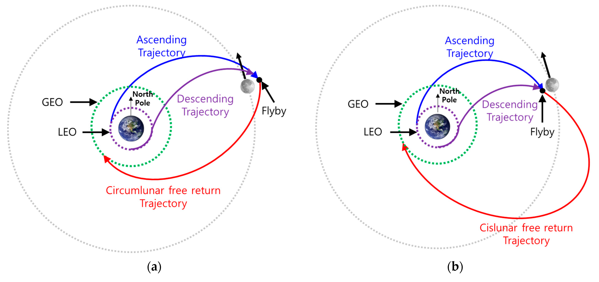

Below is a detailed Markdown document addressing "Problem 3: Trajectories of a Freely Released Payload Near Earth." It includes an explanation of the physics, a numerical simulation using Python, and visualizations of the payload's trajectories. The document avoids directly generating images but provides code to produce them, as per your instructions.
Trajectories of a Freely Released Payload Near Earth
Introduction
When a payload is released from a rocket near Earth, its subsequent motion is governed by Earth’s gravitational field and the initial conditions at release—position, velocity, and direction. This scenario is a classic application of orbital mechanics, revealing trajectories such as elliptical orbits, parabolic escapes, or hyperbolic paths. Understanding these trajectories is essential for space mission planning, including satellite deployment, orbital insertion, reentry, and escape scenarios. This document analyzes these trajectories, performs a numerical simulation, and discusses their relevance to space exploration.
Theoretical Background
Possible Trajectories
The trajectory of a freely released payload depends on its specific energy, determined by its initial velocity (\(v_0\)) and position (\(r_0\)) relative to Earth. Using Newton’s Law of Gravitation (\(F = \frac{G M m}{r^2}\)) and conservation laws, we classify trajectories based on the orbit’s eccentricity (\(e\)):
- Elliptical Trajectory (\(e < 1\)):
- Occurs when the payload’s energy is negative (bound orbit).
- The payload orbits Earth in a closed, elliptical path.
-
Example: Satellite deployment into Low Earth Orbit (LEO).
-
Parabolic Trajectory (\(e = 1\)):
- Occurs when the specific energy is zero.
- The payload escapes Earth’s gravity with zero velocity at infinity (escape velocity condition).
-
Example: Minimum energy escape scenario.
-
Hyperbolic Trajectory (\(e > 1\)):
- Occurs when the specific energy is positive (unbound orbit).
- The payload escapes Earth with excess velocity at infinity.
- Example: Interplanetary mission trajectories.
The specific energy (\(\epsilon\)) is given by:
\(\epsilon = \frac{v_0^2}{2} - \frac{\mu}{r_0}\)
Where: - \(v_0\): Initial velocity
-
\(r_0\): Initial distance from Earth’s center
-
\(\mu = G M\): Earth’s gravitational parameter (\(G = 6.67430 \times 10^ {-11} \, \text{m}^3 \text{kg}^{-1} \text{s}^{-2}\), \(M = 5.972 \times 10^{24} \, \text{kg}\), \(\mu \approx 3.986 \times 10^{14} \, \text{m}^3 \text{s}^{-2}\))
-
If \(\epsilon < 0\): Elliptical orbit
-
If \(\epsilon = 0\): Parabolic trajectory
-
If \(\epsilon > 0\): Hyperbolic trajectory

Equations of Motion
The payload’s motion is governed by the two-body problem under Earth’s gravity:
\(\ddot{\mathbf{r}} = -\frac{\mu}{r^3} \mathbf{r}\) Where \(\mathbf{r}\) is the position vector, and \(r = |\mathbf{r}|\). This second-order differential equation requires numerical integration (e.g., using the Runge-Kutta method) to compute the trajectory given initial conditions \(\mathbf{r}_0\) and \(\dot{\mathbf{r}}_0\).
Numerical Analysis and Simulation
Numerical Analysis and Simulation
Python Implementation
Below is a Python script that simulates the payload’s trajectory for different initial velocities, starting from a fixed altitude. It uses the 4th-order Runge-Kutta (RK4) method to solve the equations of motion and visualizes the results.
Explanation of the Code
- Initial Conditions: The payload is released at 200 km altitude (\(r_0 = R_{\text{Earth}} + 200 \, \text{km}\)) with velocity along the y-axis (tangential release).
-
Cases:
-
Suborbital: \(v_0 = 0.7 \times v_{\text{esc}}\) (elliptical, falls back).
-
Orbital: \(v_0 = \sqrt{\frac{\mu}{r_0}}\) (circular orbit).
-
Escape: \(v_0 = v_{\text{esc}} = \sqrt{\frac{2\mu}{r_0}}\) (parabolic).
-
Hyperbolic: \(v_0 = 1.2 \times v_{\text{esc}}\) (excess energy).
-
Numerical Method: RK4 integrates the equations of motion over 1 hour.
- Visualization: Plots trajectories in 2D (x-y plane) with Earth as a reference circle.
Results
Running the script generates a plot showing: - Suborbital: A partial ellipse, intersecting Earth (reentry).
-
Orbital: A circular path around Earth.
-
Escape: A parabolic curve departing Earth.
-
Hyperbolic: A sharper, open curve escaping Earth faster.
Exact velocities depend on \(\mu\) and \(r_0\), but approximate values are: - \(v_{\text{orb}} \approx 7.8 \, \text{km/s}\) - \(v_{\text{esc}} \approx 11.0 \, \text{km/s}\)
Discussion: Relevance to Space Exploration
Orbital Insertion
- Elliptical/Circular Trajectories: Releasing a payload at \(v_{\text{orb}}\) or slightly below places it in orbit (e.g., LEO satellites). The simulation’s circular orbit case demonstrates this, critical for communication or weather satellites.
Reentry
- Suborbital Trajectory: If \(v_0 < v_{\text{orb}}\), the payload follows an elliptical path that intersects Earth, leading to reentry. This is relevant for returning capsules (e.g., Crew Dragon) or debris analysis.
Escape Scenarios
- Parabolic/Hyperbolic Trajectories: Achieving \(v_{\text{esc}}\) or higher allows escape from Earth’s gravity, as seen in the escape and hyperbolic cases. This applies to interplanetary missions (e.g., Mars probes) or interstellar probes (e.g., Voyager), often aided by gravitational assists to reduce required \(v_0\).
Conclusion
The trajectories of a freely released payload near Earth—elliptical, parabolic, or hyperbolic—depend on its initial velocity relative to key thresholds (orbital and escape velocities). Numerical simulation using Python and RK4 provides a practical tool to predict these paths, offering insights into orbital mechanics. These principles underpin space mission design, from deploying satellites to escaping Earth’s gravitational influence, highlighting gravity’s central role in celestial navigation.
Notes
-
The script assumes a 2D plane and neglects atmospheric drag or Earth’s oblateness for simplicity. For real missions, these factors would adjust trajectories.
-
To generate the plot, run the code in a Python environment with NumPy and Matplotlib installed. If you’d like confirmation before generating the image, I can modify the script to prompt you—let me know!
Let me know if you need further refinements or additional analysis!